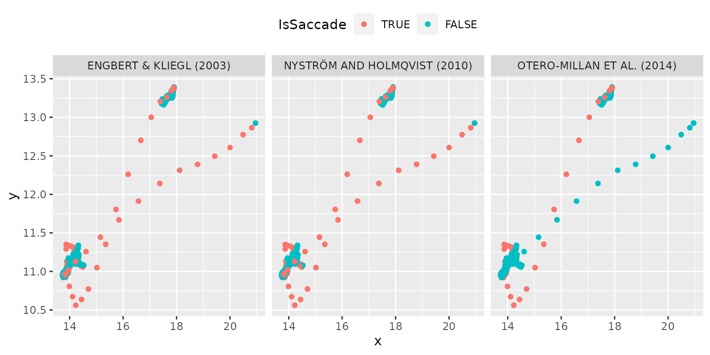

using_sample_votes.Rmd
library(ggplot2)
library(saccadr)
#> Loading required package: dplyr
#>
#> Attaching package: 'dplyr'
#> The following objects are masked from 'package:stats':
#>
#> filter, lag
#> The following objects are masked from 'package:base':
#>
#> intersect, setdiff, setequal, union
#> Loading required package: rlang
#> Loading required package: cluster
#> Loading required package: signal
#>
#> Attaching package: 'signal'
#> The following object is masked from 'package:dplyr':
#>
#> filter
#> The following objects are masked from 'package:stats':
#>
#> filter, poly
#> Loading required package: tidyrFunction extract_saccades() has an option to return
sample votes for each method via return_votes = TRUE
parameter. Here is an example of using them for internally implemented
methods.
data("single_trial")
methods_to_use <- list("ek", "om", "nh")
votes <- saccadr::extract_saccades(x = single_trial$x,
y = single_trial$y,
sample_rate = 500,
methods = methods_to_use,
return_votes = TRUE)
single_trial_with_votes <- list()
for(imethod in 1:length(methods_to_use)){
single_trial_with_votes[[imethod]] <- single_trial
single_trial_with_votes[[imethod]]$Method <- toupper(methods_to_use[[imethod]])
single_trial_with_votes[[imethod]]$IsSaccade <- votes[, imethod]
single_trial_with_votes[[imethod]]$IsSaccade <- factor(single_trial_with_votes[[imethod]]$IsSaccade == 1,
levels = c(TRUE, FALSE))
}
ggplot(do.call("rbind", single_trial_with_votes),
aes(x = x, y = y, color = IsSaccade)) +
geom_point() +
facet_grid(. ~ Method)